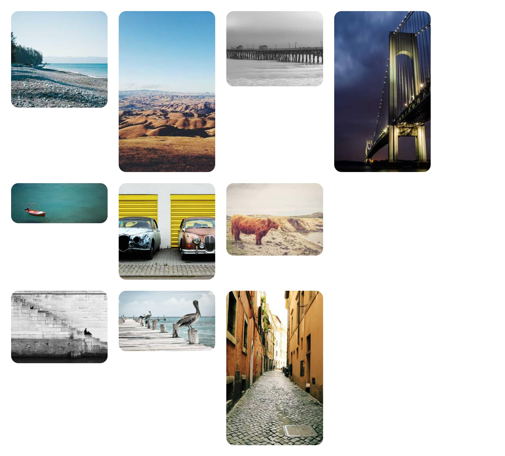
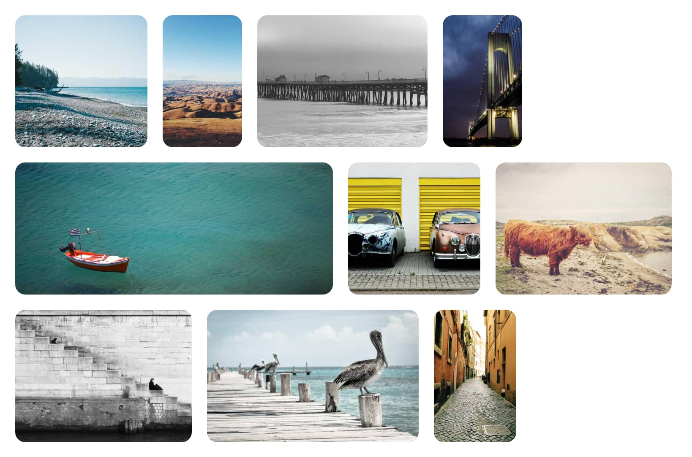

Exploiting flex-grow for an Image Gallery
There are lots of different ways to construct image galleries on the web. When building these it's desirable to:
- Maintain the aspect-ratio of the images.
- Reduce/remove any "whitespace"/"free-space" present (ideally you want all the images to fill the entire space available) aka full-bleed.
These two constraints are often at odds with each other. Google photos has previously described in detail how they have previously tried to solve this. A simple solution which web-developers often use is a wrapping flexbox, however this often leaves whitespace at the end of each flex-line (leaving a ragged edge).
There is a solution to this by using the flex-grow property (potentially one of
the few reasons to use flex-grow with a non-zero or one value).
.gallery {
display: flex;
flex-wrap: wrap;
flex-wrap: balance; /* "balance" will be better once available. */
gap: 24px;
}
/*
This assumes the content is of the form <img width=100 height=100>
However, it can be adjusted on any content via. the aspect-ratio property.
*/
img {
--ar: attr(width type(<number>)) / attr(height type(<number>));
width: calc(20% * var(--ar));
height: auto;
flex-grow: calc(var(--ar));
}That's it!
What is this magic?!?
How this works is a little quirky:
-
The images in their initial form (with
width: 20%) will look something like this:First we calculate the aspect-ratio from the
widthandheightattributes on the image, via. the newattr()function available in CSS:img { --ar: attr(width type(<number>)) / attr(height type(<number>)); }attr()is currently only available in Chromium based browsers, but could be set manually via script. -
We use this aspect-ratio to override the
widthof the images. By setting thewidthproportional to the apsect-ratio (calc(20% * var(--ar))), we ensure that every image will have the same height before wrapping and growing. For example:At this stage we are left with images which all have the same height, but have a ragged edge once broken into lines.
-
We then use
flex-growso that each image will grow proportionally to its aspect-ratio. This ensures that each image will keep the same height as others on the line, but will fill the remaining space.Each line will end up with a slightly different size, but all the images keep their aspect-ratio!
Downsides?
Like anything there are some potential downsides.
-
We are ignoring the pixel sizes of the images, it's possible under this scheme to scale up an image past its natural pixel size (causing pixelation).
-
Due to the way flex line-breaking works, it's possible for a single image to be placed on a single line. This often looks bad, but will be mostly fixed once flexbox receives
flex-wrap: balance.Chromium/Blink has an implementation of
flex-wrap: balancebehindchrome://flags/#enable-experimental-web-platform-features.
Both of these issues can be mitigated by adding something like:
img {
max-width: min(100%, calc(50% * var(--ar)));
}This will prevent images with too much space on a line from growing too much. But will potentially leave some space on the line.
Questions?
If you have any suggestions/comments/questions or a cool name for this technique feel free reach to me on Bluesky.
A JSFiddle of this approach can be found here.
Images used in the demo(s) are from Lorem Picsum.
A live demo is below: